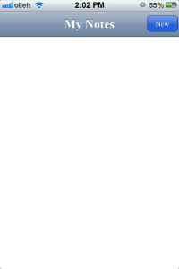
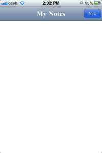
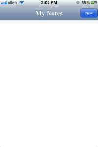
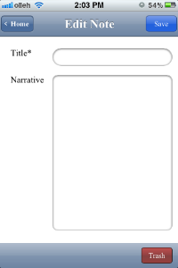
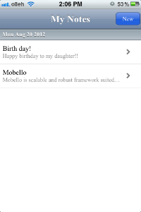
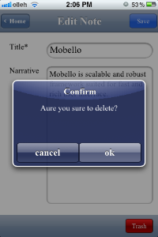

노트앱에서 노트 리스트를 출력하고 새로 생성한 노트의 데이터를 저장하기 위해 모델을 생성합니다. 모벨로에서는 Loosely Coupled된 방식을 모델을 정의할 수 있도록 지원합니다. 다음의 코드에서 처럼 tau.rt.EventDelegator를 상속받아 모델을 정의함으로써 모델에 변경이 발생할 경우 이벤트를 통해 변경된 정보를 알려 줄 수 있습니다.
/**
* Data Model for NoteApp
*/
$class('note.NoteModel').extend(tau.rt.EventDelegator).define({
NoteModel: function () {
this.ctx = tau.getCurrentContext();
this.storage = this.ctx.getStorage('$data') || [];
this.delta = [];
},
get: function (id) {
var i, model = this.storage;
for (i = 0, len = model.length; i < len; i++) {
if (model[i].id === id) {
return model[i];
}
}
return (id === null) ? this.storage : null;
},
add: function (note) {
this.storage.push(note);
this._sync();
this.delta.push({
type: 'add',
note: note
});
},
remove: function (id) {
var note = this.get(id);
this.storage.splice(this.storage.indexOf(note), 1);
this._sync();
this.delta.push({
type: 'remove',
note: note
});
},
update: function (note) {
var old = this.get(note.id);
this.storage[this.storage.indexOf(old)] = note;
this._sync();
this.delta.push({
type: 'update',
note: note
});
},
_sync: function () {
this.ctx.setStorage('$data', this.storage);
},
notifyDelta: function () {
while (this.delta.length > 0) {
this.fireEvent('modelchange', this.delta.shift());
}
}
});
/**
* DataStore manages singleton instance of NoteModel
*/
$class('note.DataStore').define({
$static: {
NOTE: new note.NoteModel()
}
});
모델에 수정사항이 발생할 경우 변경된 정보를 임시로 저장하고 있다가 notifyDelta()메소드가 호출되면 변경된 정보에 대한 이벤트를 발생시킵니다. 다음의 코드와 같이 이벤트 리스너를 등록하면 변경된 정보의 이벤트를 받아 볼 수 있습니다. 이때 NoteModel은 Singleton으로 관리되어야 하므로 note.DataStore.NOTE와 같이 Singleton객체에 접근합니다.
$class('note.ListController').extend(tau.ui.SceneController).define({
...
init: function () {
// register event listener for modelchange event
note.DataStore.NOTE.onEvent('modelchange', this.handleModelChange, this);
},
handleModelChange: function (e, payload) {
...
},
...
});
앞에서 모벨로 스튜디오를 통해 생성한 list.scene을 제어하기 위해 Controller 클래스인 ListController를 main.js파일에 생성합니다. Scene이름이 list.scene이고 Controller이름이 ListController이면 NamingConvention에 의해 ListController는 자동으로 list.scene을 로딩합니다. Scene파일 로딩과 관련된 자세한 내용은 여기에서 참고하시기 바랍니다.
$class('note.ListController').extend(tau.ui.SceneController).define({
init: function () {
var nav, btn;
this.setTitle('My Notes');
nav = this.getNavigationBar();
nav.setBackButtonText('Home');
btn = new tau.ui.Button({
label: 'New',
styleClass: {
type: 'blue'
}
});
btn.onEvent(tau.rt.Event.TAP, this.propagateEvent, this);
nav.setRightItem(btn);
note.DataStore.NOTE.onEvent('modelchange', this.handleModelChange, this);
},
sceneLoaded: function () {
var i, cell,
list = this.getScene().getComponent('notes'),
notes = note.DataStore.NOTE.get(null);
for (i = 0, len = notes.length; i < len; i++) {
cell = this._newCellWith(notes[i]);
list.add(cell);
}
},
_newCellWith: function (note) {
var cell = new tau.ui.TableCell({ id: note.id });
cell.setTitle(note.title);
cell.setSubTitle(note.narrative);
cell.setRightItem(new tau.ui.ImageView({
src: '/arrow.png',
styles: {
width: '25px',
height: '20px'
}
}));
cell.setGroupName(note.date);
return cell;
},
handleModelChange: function (e, payload) {
var section, cell,
scene = this.getScene(),
list = scene.getComponent('notes'),
note = payload.note;
switch (payload.type) {
case 'add' :
list.add(this._newCellWith(note));
scene.update();
break;
case 'remove' :
section = list.getTableSectionFromGroupName(note.date);
section.remove(section.getComponent(note.id), true);
if (section.getComponents().length == 0) {
list.remove(section, true);
}
break;
case 'update' :
cell = list.getComponent(note.id);
cell.setTitle(note.title);
cell.setSubTitle(note.narrative);
break;
}
}
});
초기화 메소드인 init메소드에서 두가지 작업을 수행합니다. Scene Navigation을 위해 사용되는 NavigationBar에 "New" 버튼을 추가하는 작업과, 데이터 모델이 변경되었을 때 변경된 사항을 이벤트로 전달 받기 위해 이벤트 리스너를 등록하는 작업을 수행합니다. 모델과 관련된 부분은 앞에서 설명한 노트앱 모델 생성하기부분을 참고하시기 바랍니다. NavigationBar에 등록된 "New"버튼을 터치하면 새로운 노트를 입력할 수 있는 Scene(write.scene)으로 이동합니다. 이를 위해 이벤트 리스너를 btn.onEvent(tau.rt.Event.TAP, this.propagateEvent, this);와 같이 등록합니다. 이 부분은 SequenceNavigator 를 이용한 화면 이동에서 자세하게 설명하겠습니다.
list.scene이 로딩되고 나면 Lifecycle에 의해 Controller는 sceneLoaded메소드를 호출합니다. 만약 Scene 로딩 후 추가적인 작업이 필요할 경우 이 메소드를 오버라이드해서 구현하면 됩니다. 위의 코드에서는 Model로 부터 기존에 작성된 노트를 모두 가져와서 리스트로 출력하는 작업을 sceneLoaded에서 구현합니다. 이때 this.getScene().getComponent('notes')로 가져온 컴포넌트는 id가 notes인 테이블 컴포넌트를 나타냅니다.
ListController와 마찬가지로 write.scene을 제어하기 위한 WriteController를 다음과 같이 작성합니다.
$class('note.WriteController').extend(tau.ui.SceneController).define({
WriteController: function (id) {
this.id = id;
},
init: function () {
var nav, btn;
this.setTitle('Edit Note');
nav = this.getNavigationBar();
btn = new tau.ui.Button({
label: 'Save',
styleClass: {
type: 'blue'
}
});
btn.onEvent(tau.rt.Event.TAP, this.handleSave, this);
nav.setRightItem(btn);
},
sceneLoaded: function () {
var item, scene = this.getScene();
if (this.id) {
item = note.DataStore.NOTE.get(this.id);
scene.getComponent('title').setText(item.title);
scene.getComponent('narrative').setText(item.narrative);
} else {
scene.getComponent('write').setDisabled(true);
}
},
handleSave: function (e, payload) {
var date = new Date(),
scene = this.getScene(),
item = {
id: this.id || '' + date.getTime(),
title: scene.getComponent('title').getText(),
narrative: scene.getComponent('narrative').getText(),
date: date.toDateString()
};
if (item.title.length == 0) {
tau.alert('Please enter a title for this note.', {
title: 'Alert'
});
return;
}
if (this.id) {
note.DataStore.NOTE.update(item);
} else {
note.DataStore.NOTE.add(item);
}
this.propagateEvent(e, payload);
},
handleTrash: function (e, payload) {
var that = this,
id = this.id;
function trashIt (result) {
if (!result)
return;
note.DataStore.NOTE.remove(id);
that.propagateEvent(e, payload);
}
if (!id)
return;
tau.confirm('Aure you sure to delete?', {
title: 'Confirm',
callbackFn: trashIt
});
}
});
WriteController클래스는 두 가지의 시나리오 즉, 새로운 노트를 작성하거나 기존에 작성된 노트를 수정하는 작업을 동시에 처리합니다. 기존에 작성된 노트를 수정할 경우 생성자를 통해 해당 노트의 id를 파라미터로 전달 받습니다. 초기화 메소드인 init메소드에서는 NavigationBar에 "Save" 버튼을 설정하고 이 버튼에 이벤트 리스너를 btn.onEvent(tau.rt.Event.TAP, this.handleSave, this);와 같이 지정합니다. sceneLoaded 메소드에서는 생성자에서 파라미터로 전달받은 노트 id가 존재할 경우 기존에 작성된 노트를 출력하도록 하고 그렇지 않으면 새로운 노트를 작성하도록 화면을 구성합니다.
"Save"버튼에 이벤트 리스너로 등록된 handleSave 메소드는 아래의 코드와 같이 노트 id가 존재하면 기존의 노트 Model을 업데이트하고 그렇지 않으면 새로운 노트를 추가하도록 합니다.
if (this.id) {
note.DataStore.NOTE.update(item);
} else {
note.DataStore.NOTE.add(item);
}
this.propagateEvent(e, payload);
마지막 줄의 this.propagateEvent(e, payload);는 버튼이 터치되었을 때 list.scene화면으로 돌아가도록 하며 자세한 부분은 다음에 설명할 SequenceNavigator를 이용한 화면 이동에서 다루겠습니다
handleTrash메소드는 write.scene에서 ToolBar에 추가된 "Trash"버튼의 이벤트 리스너로써 NoteModel에서 id에 해당하는 노트를 찾아 삭제 후 list.scene으로 이동하도록 합니다. list.scene으로의 이동을 위해 "Save"버튼에서 처럼 that.propagateEvent(e, payload);을 기술합니다.
모벨로는 자주 사용되는 UX를 쉽게 구한할 수 있도록 Built-in Controller를 제공하고 있습니다. SequenceNavigator는 화면 이동시 History를 쉽게 관리할 수 있는 기능을 지원하며 이와 같은UX를 구현하고자 할 경우 SequenceNavigator 클래스를 상속받아 구현합니다. SequenceNavigator는 내부적으로 SceneController를 관리하며 순방향으로 화면이동을 하고자 할 경우 pushController() 메소드를 사용합니다. 이때 파라미터는 이동하고자 하는 Scene의 SceneController가 됩니다. 반대방향으로 이동하고자 할 경우 popController() 메소드를 활용합니다.
$class('note.MainController').extend(tau.ui.SequenceNavigator).define({
init: function () {
this.setRootController(new note.ListController());
this.onEvent(tau.rt.Event.TAP, this.handleBtnTap, this);
this.onEvent(tau.rt.Event.SELECTCHANGE, this.handleCellTap, this);
this.onEvent(tau.rt.Event.RT_CTRL_CHANGE, function () {
note.DataStore.NOTE.notifyDelta();
}, this);
},
handleBtnTap: function (e, payload) {
var src = e.getSource();
if (src instanceof tau.ui.Button) {
var label = src.getLabel();
if (label === 'New') {
this.pushController(new note.WriteController());
} else { // (label === 'Save' || label === 'Trash')
this.popController();
}
}
},
handleCellTap: function (e, payload) {
var id = payload.current.getId();
this.pushController(new note.WriteController(id));
}
});
초기화 메소드인 init()메소드에서는 화면전환을 처리하기 위해 이벤트 리스너들을 등록합니다. 각 이벤트의 종류에 따라 리스너에서 pushController 또는 popController 메소드를 이용해 화면이동을 처리합니다. this.onEvent(tau.rt.Event.TAP, this.handleBtnTap, this);를 통해 등록된 탭 이벤트 리스너는 list.scene에서의 "New"버튼을 터치하거나 write.scene에서의 "Write" 또는 "Trash" 버튼을 터치할 때마다 수행됩니다. 왜냐하면 이벤트 처리를 위해 사용자가 직접 정의한 이벤트 리스너를 사용하지 않고 SceneController에 있는 propagateEvent메소드를 리스너로 등록했기 때문입니다.
SequenceNavigator에서 화면이동을 위해 setRootController() 또는 pushController() 메소드를 사용하여 이동하게 될 Scene의 SceneController를 설정합니다. 이와 같은 방법으로 SceneController가 SequenceNavigator에 설정되면 SequenceNavigator와 SceneController 사이에는 Parent-Child관계가 형성됩니다. 따라서 Child로 설정된 SceneController에서 발생된 이벤트는 propagateEvent() 메소드를 통해 상위 클래스로 전달되고 Parent 인 SequenceNavigator에서는 onEvent() 메소드로 해당 이벤트를 받을 수 있습니다.
탭 이벤트 리스너로 등록된 handleBtnTap 메소드에서는 "New"버튼을 터치했을 경우 write.scene으로 이동시키기 위해 pushController()메소드를 호출하며 WriteController의 인스턴스를 파라미터로 전달합니다. 반대인 경우는 popController() 메소드를 통해 이전 화면으로 이동하도록 합니다.
같은 방법으로 list.scene에서 노트 리스트를 터치할 때마다 Parent인 SequenceNavigator(MainController)에서 이벤트를 전달 받도록 하기 위해 Part2의 노트 리스트 화면 생성시 테이블 컴포넌트의 "onSelectChange"이벤트 리스너로 propagateEvent를 등록하였습니다. 따라서 tau.rt.Event.SELECTCHANGE 이벤트가 발생할 때마다 handleCellTap 리스너가 동작하게 됩니다. 이때 해당 노트의 수정을 위해 TableCell의 id를 가져온 다음 this.pushController(new note.WriteController(id));와 같이 write.scene으로 이동시킵니다.
마지막으로 SequenceNavigator에서 Scene이 이동될 때마다 발생되는 이벤트인 tau.rt.Event.RT_CTRL_CHANGE를 이용하여 Model에 변경된 내용을 list.scene에 반영합니다. NoteModel은 Model의 변경이 발생할 경우 해당 내용을 임시 저장하고 있다가 notifyDelta() 메소드가 호출되면 이벤트를 통해 등록된 리스너에게 알려줍니다. NoteModel에 대한 자세한 내용은 앞에서 설명한 노트앱 모델 생성하기를 참고하시기 바랍니다.


